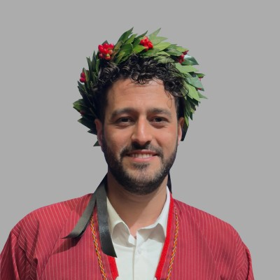

Kazem Bigdeli
Cloud & AI Infrastructure Engineer
~/about
I build Kubernetes platforms at the multi-cluster, scheduling and networking layer, write controllers in Go, and automate infrastructure end to end. I'm now focused on the infrastructure that runs AI: GPU compute, high-performance networking, and the orchestration that ties them together.
~/now
buildingfederation-autoscaler: borrowing compute across federated Kubernetes clusters
researchingAI workload optimization for telco edge data centers
studyingNVIDIA AI Operations (NCP-AIO) · exam in January 2027
~/experience
Research Fellow · Politecnico di Torino
2024 – present
- AI workload optimization for telco edge data centers; infrastructure architecture for the FiberCop telco edge network.
- Building federation-autoscaler, a Cluster Autoscaler extension that borrows compute across federated clusters via Liqo.
- Contributor to Liqo (CNCF ecosystem); energy monitoring with Prometheus, Grafana and Kepler.
Cloud-Native Engineer Intern · Engineering Group
2025 – 2026
- Sole author of liqo-upgrade-operator: staged upgrades with health gates and automatic rollback; peering downtime cut to about 30 seconds.
System Administrator · MPP Holding
2021 – 2023
- Ran servers, virtual machines and network infrastructure for an organisation of about 100 users.
~/projects
federation-autoscaler
Cluster Autoscaler extension that exposes compute from federated clusters as virtual nodes.
liqo-upgrade-operator
Minimal-downtime Liqo upgrades with health gates and automatic rollback.
gitops-k8s-platform
A commit becomes a running, monitored deployment with multi-window SLO alerts.
aws-landing-zone
Terraform landing zone with EKS, IRSA and a credential-less OIDC pipeline.
~/certifications
MikroTik
MTCNA · MTCWE
2017 – 2018
Next
NVIDIA AI Operations · AI Networking
NCP-AIO · NCP-AIN
~/skills
ai-infrastructure
kubernetes
cloud & automation
observability
foundations
~/education
M.Sc. Computer Engineering · Politecnico di Torino
2023 – 2026
B.Sc. Information Technology Engineering · University of Applied Science and Technology, Iran
2016 – 2018